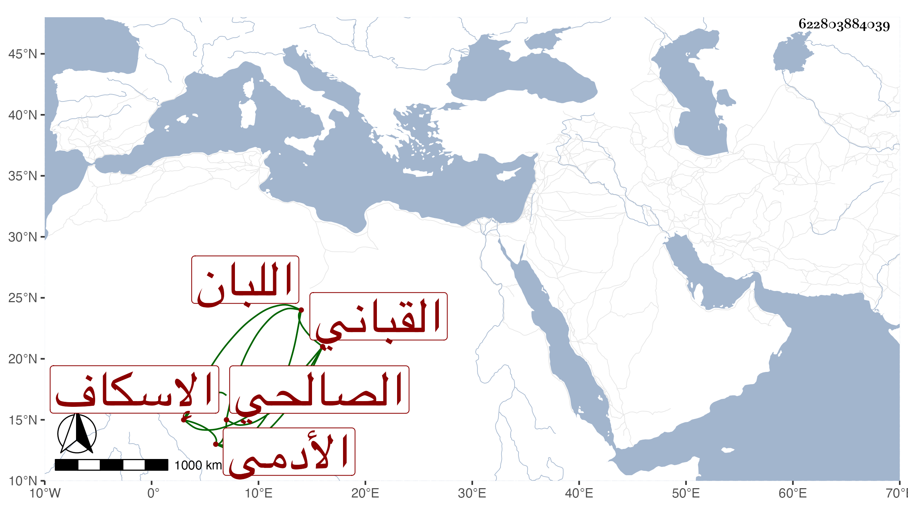

0902Sakhawi.DawLamic.ITO20230111-ara1.EIS1600.622803884039
Biography ID: 622803884039
392
محمد بن محمد بن علي بن محمد بن شعبان الشمس الصالحي اللبان الأدمي الإسكاف القباني أبوه وأخو أحمد الماضي ويعرف بابن الجوازة ولد سنة اثنتين وخمسين وسبعمائة وسمع في سنة ستين من محمد بن أبي بكر بن علي السوقي قطعة من أول الموقف والاقتصاص للضياء ولم يوجد له سماع على قدر سنه . ذكره شيخنا في معجمه وقال : أجاز لي قلت ولقيه ابن موسى في سنة خمس عشرة فقرأ عليه القطعة المشار إليها وسمعها معه الموفق الأبي .
